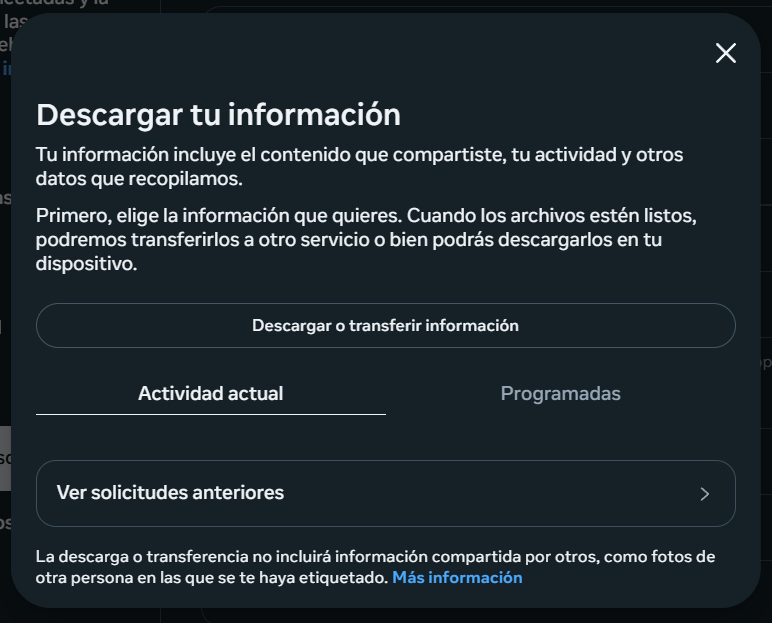
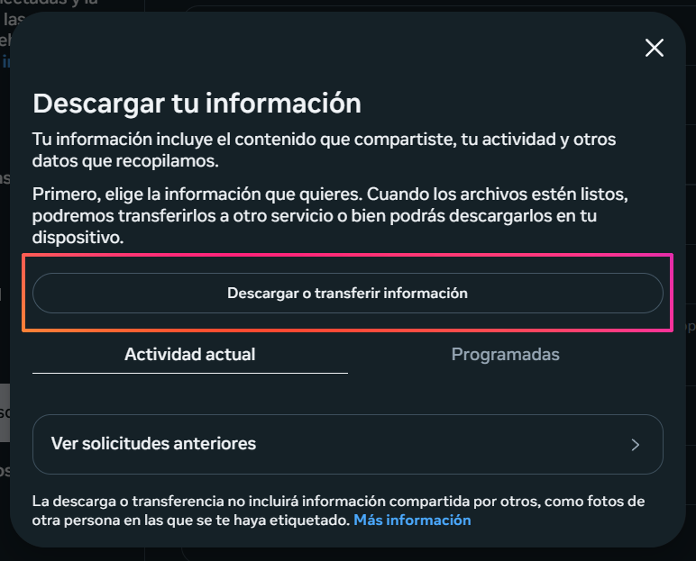
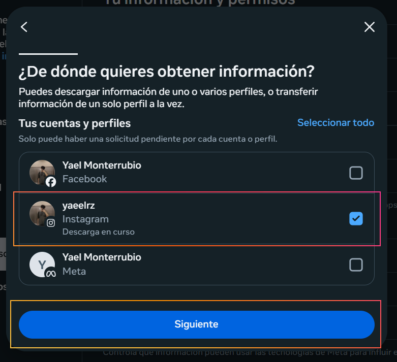
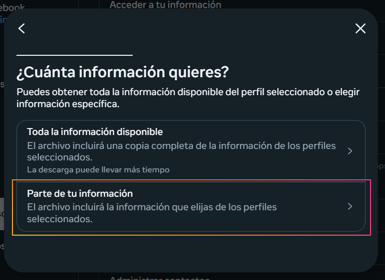
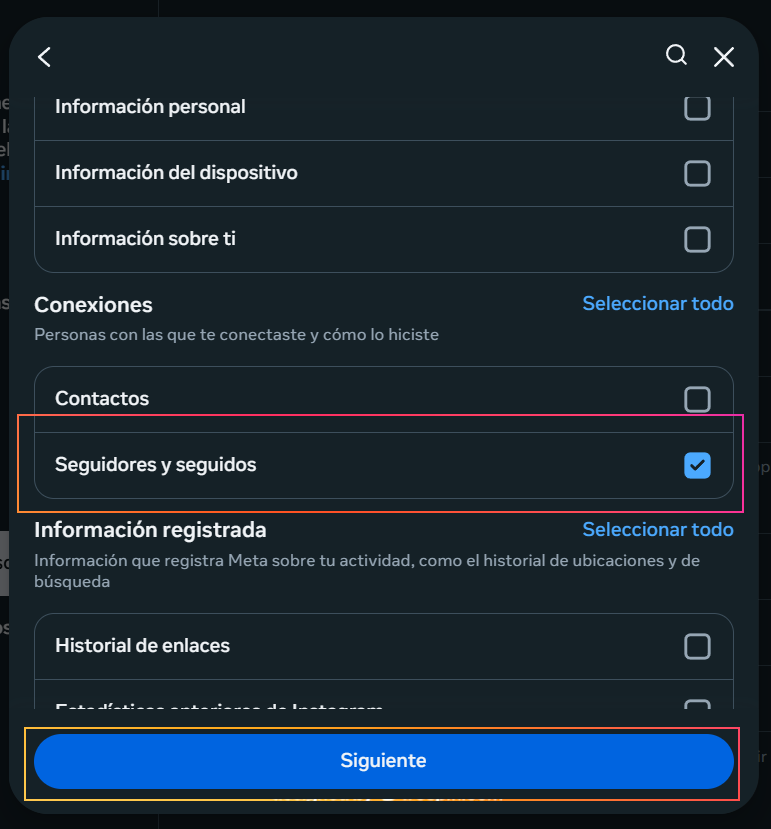
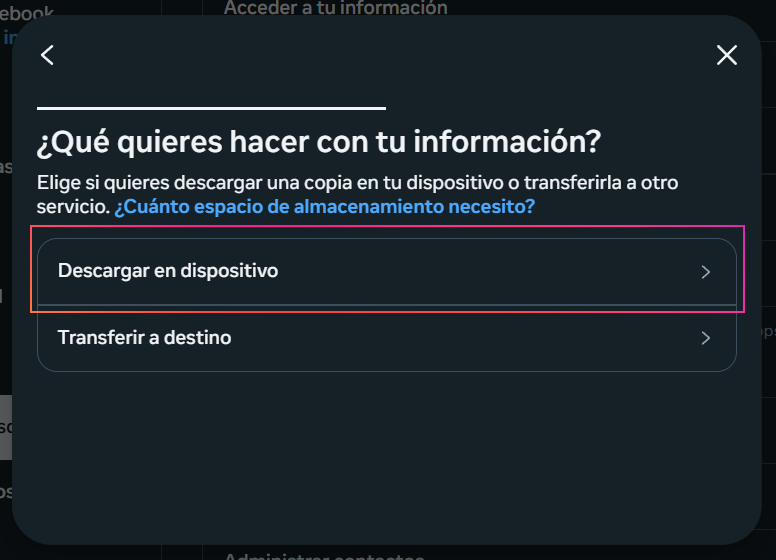
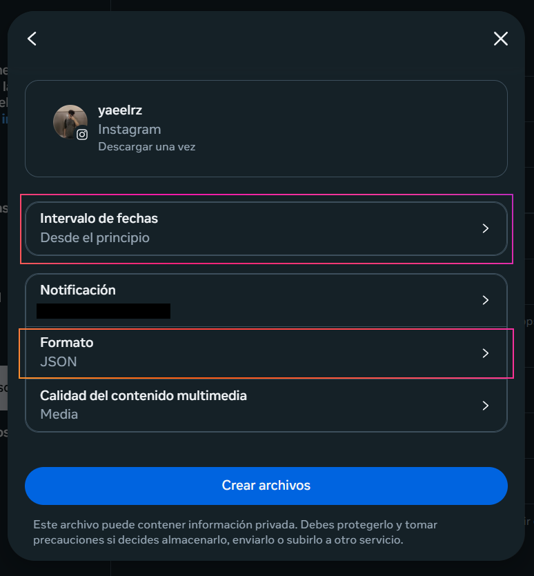
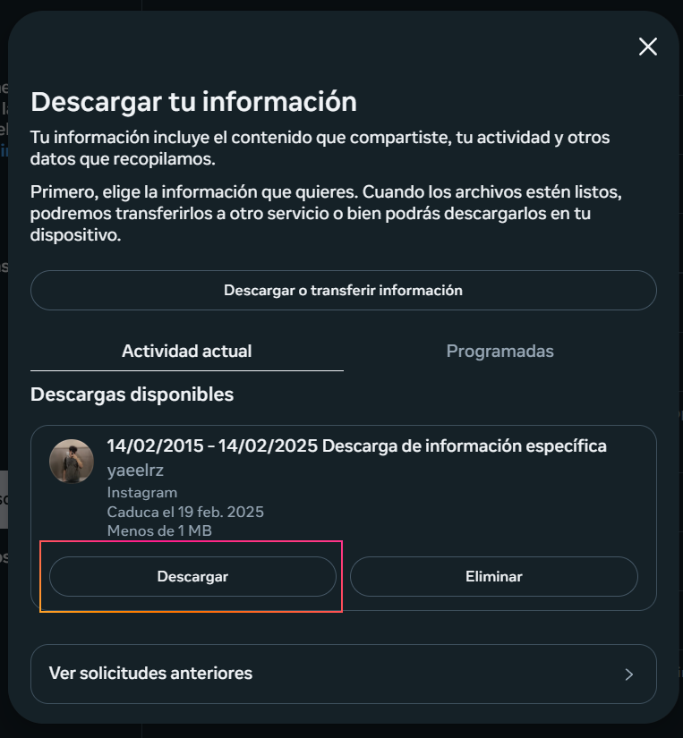

1. Ingresa a este link para descargar tus seguidores y seguidos.
2. Da clic en Descargar Información.
3. Selecciona tu usuario de Instagram y da clic en Siguiente.
4. Selecciona la opción "Parte de la Información".
5. Desplázate hasta la sección de "Conexiones" y selecciona "Seguidores y Seguidos".
6. En la sección de qué quieres hacer con tu información, selecciona Descargar en dispositivo.
7. En el intervalo de fecha selecciona Desde el principio y en Formato selecciona JSON.
Una vez que hayas completado estos pasos, pasados unos minutos podrás descargar el archivo .zip accediendo nuevamente a este link.
¡Ahora puedes continuar con el análisis en FollowCheck!
Volver al Inicio